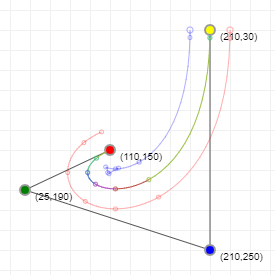

Stroking is HARD!
|  |
Stroking is equivalent to filling the region between two offset curves. The offset curve of a cubic bezier is immensely complex. In fact, it's non-polynomial! Skia didn't have a good solution. The best it could do was to recursively chop at max curvature and piece together an approximating path to fill.
|
 Polar & Parametric
Stroke Tessellation
Polar & Parametric
Stroke Tessellation
I built on Mark Kilgard's Polar Stroking work to develop a GPU algorithm that tessellates any offset curve within rigorous smoothness constraints. It works by drawing strokes as tessellated triangle strips, composed of sorted parametric and polar edges.
- Parametric edges (drawn as cyan below) are placed at even steps in parametric space.
- Wang's formula tells us how many parametric edges to draw.
- Polar edges (drawn as red below) are placed at even steps in tangent angle.
- The number of polar edges we draw is directly proportional to the curve's total rotation.
- The tessellation shader merge-sorts
both sets of edges together then builds a triangle strip.
- The sort is only virtual; it operates entirely in flops without accessing memory.
- The sort has a good balance of "simple" flops that hide the latency of "special functions" like cos().
Drag the blue control points below to interact with the tessellation.
Impact
- Skia's first and only stroker powered fully by the GPU.
- 25x faster than Skia's prior stroking implementations on Apple M1.
- Improved Chrome's
MotionMark
Paths score from 2,100 to 23,000 on Apple M1.
- The GPU can score higher once upstack bottlenecks are addressed.
- More than doubled Chrome's overall MotionMark score and surpassed Safari.
- Safari's prior dominance on this benchmark was being widely quoted in the press.
- Google tried to file a patent, but was unable because of complications with open source.
- Skia GPU team is now entirely rewriting our backend around my tessellation algorithms.
SVG Joins
Joins are crafted as a special case of cubic cusp. Lines and quadratics are also converted to cubics.
Everything is a cubic -- a single call to glDrawArrays() will stroke an entire path.